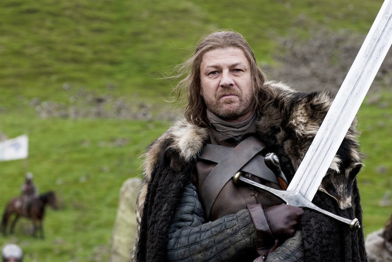
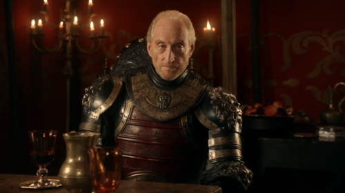
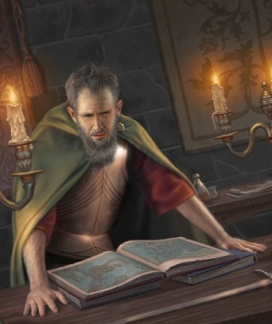

James Burruss  Head of House Stark, the Lord of Winterfell, Lord Paramount and Warden of the North, and Hand of the King to King Robert I Baratheon. Older brother of Benjen, Lyanna and the younger brother of Brandon Stark. He is the father of Robb, Sansa, Arya, Bran and Rickon by his wife, Catelyn Tully, and uncle of Jon Snow, raising him as his bastard son.
Darryl Scott  is Lord of Casterly Rock, Shield of Lannisport, Warden of the West and Hand of the King to King Aerys and King Joffery Bartheon. The head of House Lannister, Tywin is one of the most powerful lords in Westeros, and is the father of Jaime, Cersei, and Tyrion Lannister.
Sharyn Finney  Head of House Arryn Lord of the Eyrie, Defender of the Vale, and Warden of the East. He served as Hand of the King to Robert I Baratheon. Jon was the husband of Lady Lysa Arryn and father of Lord Robert Arryn, and he acted as a second father to Lord Eddard Stark and King Robert.